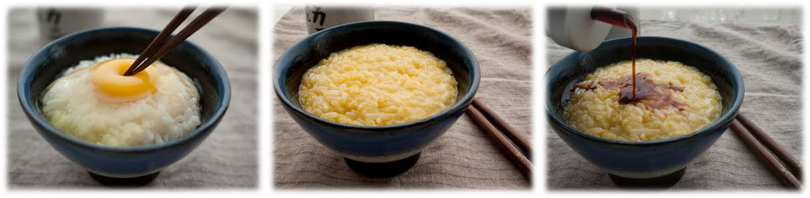

我无数次被问道：“日本人是不是喜欢吃生的？”这个问题的源头应该是生鱼片。刺身（sashimi，生鱼片）确实是很有代表性的日本料理，但在日本也绝对不是餐餐必备。据年近七十的父亲回忆，在他小时候，生鱼片是高级料理，平民家的孩子几个月才能吃到一两片。随着运输的发达和冷藏技术的提高，如今在日本，生鱼片比过去亲民许多。在大中型超市花1000日元（约合60元人民币）就可以买到差不多2人份的生鱼片拼盘。与此同时，日本人的食谱也发生了变化，选择越来越丰富，虽然生鱼片不贵，但也不会天天吃。另外补充一下，有不少日本人不喜欢或不太能吃生鱼片。笔者小时候就吃不来，大概过了20岁，才慢慢认识了它的滋味。
那么生鸡蛋浇饭呢？蛋浇饭的日语叫“たまごかけごはん”（Tamago Kake Gohan，浇蛋的米饭，简称TKG），将搅拌好的生鸡蛋浇在热乎乎的白米饭上，加一点点生抽拌着吃。这种生鸡蛋吃法在日本倒是蛮普及的，我小时候的早餐经常是TKG，如今每次回国也一定要吃一两次。TKG的重点是白米饭的温度，一定要是热乎乎的，能把蛋液热到五成熟。很难想象凉凉的TKG。

在日本，有一项生冷指标倒是很固定，那就是餐厅给客人提供的水默认是冰的。具体原因很难考据，只能说这就是习惯。大学的时候，我在餐厅打工，当服务员，每回都是在水里加好冰块端给客人。不过在中国生活多年后，我已经习惯喝常温的水。有时候在日本的便利店买水，找不到常温的反而觉得不方便。
日本料理给人的印象可能是：量少＋清淡＋低热量＝健康。外加日本人一直以长寿闻名，强化了大家的这一印象。虽然寿命还牵涉到生活习惯、环境、医疗保障等多个方面。
其实，日本料理中，不少菜谱重油重糖，热量值相当高。比如四喜烧定食[2]、生姜烧定食、天妇罗定食、炸猪排定食等套餐，因为里面的油脂多，一餐就有900千卡左右的热量，相当于成人每日所需热量的一半。著名的“丼物”（盖浇饭）因为米饭分量和油脂多，炸猪排盖饭、天妇罗盖饭、鳗鱼盖饭都有800～1000千卡。传统的寿司使用的油不多，但有些店提供的卷寿司使用大量的蛋黄酱和油沙拉酱，这也会使热量飙升。
顺便说说饮食习惯。传统的日本饮食习惯以米饭为主，荤素搭配相对均衡。经过战后的经济成长期，日本人的饮食习惯变化很大，据调查统计，2000年日本大米的消费量仅为1960年的一半，肉类和奶制品的消费翻了4倍，油脂翻了3倍。加上便利店和外卖食品的普及，日本同样出现了糖尿病、高血压、肥胖等“生活习惯病”。
日本料理=寿司！这个公式在海外有可能成立。但寿司只是日本料理的一小部分，并非每家日料店都会提供，日本家庭也不是天天吃寿司。在日本，自助形式的日料店非常少见。通常都是某一领域（鳗鱼、荞麦面、天妇罗、寿司、火锅等）的厨师专供自己最拿手的菜。所以，荞麦面店很少会提供寿司，寿司店里也很难吃到乌冬面。 寿司的花色很多：用海苔卷成的卷寿司，小块醋饭与生鱼片搭档的握寿司，醋饭上铺满海鲜、海苔和蛋皮丝的散寿司，把醋饭用豆皮包起来的稻荷寿司，用白醋处理过的鱼类制成的押寿司等等。寿司的材料不一定都是生的，不习惯生冷的话，可以试试烤鳗鱼寿司、玉子烧寿司、蟹肉寿司和蒸虾寿司。
再答复一个常见问题：“饭团是不是用醋饭做的？”饭团和握寿司，因为都是用米饭，常有朋友会混淆。其实，饭团是以白米饭捏成圆形或三角形的食物，传统饭团的馅料是紫苏梅干、调味柴鱼片等，吃的时候一般不加热。握寿司是将寿司饭（醋饭）捏成小小一块，放上生鱼片等海鲜后捏成的食物。
虽然生活在信息飞速流通的时代，但仍有不少日本人认定法国人天天吃法棍，印度人没有咖喱就活不下去，源于中国的饺子一定要配米饭吃[3]。其实，日本很有名的中华料理“天津饭”[4]在天津根本就没有；夏日人气食物“冷中华[5]”，中国人听了更是一头雾水。误解会带来麻烦，但同时也创造惊喜，这是文化传递中很有意思的地方。笔者个人认为，若大家都对别国了解得一清二楚，世界反而会变得无聊。去年12月，“和食”（日本料理）被联合国教科文组织批准为世界无形文化遗产，也许对“和食”的海外推广有所助益。
更多